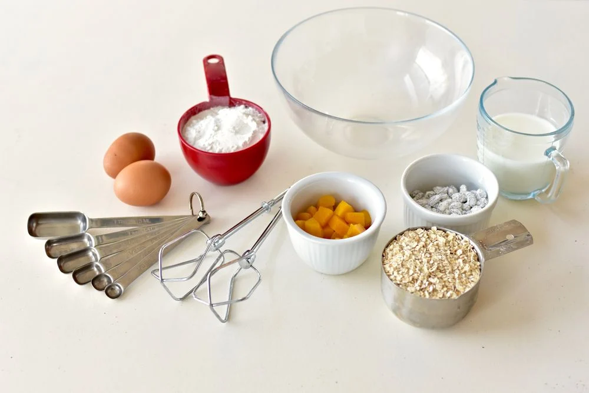

RECEITA DE BOLO DE CHOCOLATE
Ingredientes
- 2 xicaras de farinha de trigo
- 1 xicara de açucar
- 1 xicara de chocolate em pó
- 1 xicara de leite
- 1/2 xicara de óleo
- 3 ovos
- 1 colher de sopa de fermento em pó

Modo de preparo
- Preaqueça o forno a 180°C.
- Em uma tigela, misture a farinha, o açucar e o chocolate em pó.
- Adicione o leite, o oléo e os ovos, e misture bem.
- Acrescente o fermento e mexa delicamente.
- Despeja a massa em uma forma untada e enfarinhada.
- Leve ao forno por aproxidamento 40 minutos.
- Retire do forno, deeixe esfriar e sirva.